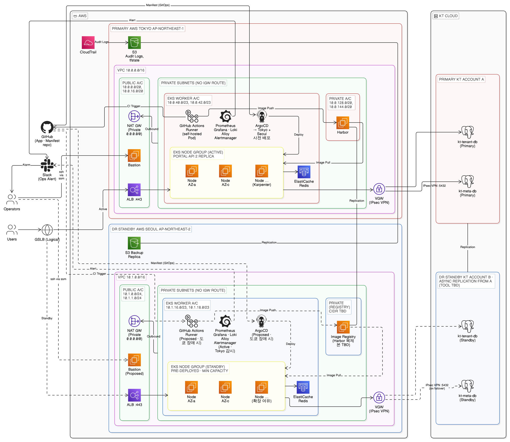
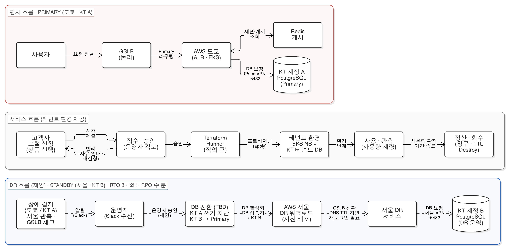
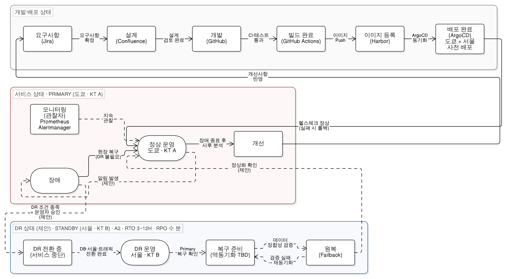

박성웅
정확하게 듣는 것이 팀워크의 시작임을 현장에서 배운 박성웅입니다.
| 이메일 | yeopoh13@gmail.com |
|---|---|
| 연락처 | 010-3223-1390 |
| GitHub | github.com/Bakseongung |
프로젝트
프로젝트
FailoverSky
개인 프로젝트 · 실시간 공역 스트리밍 & 이벤트 드리븐 클라우드 플랫폼
- 데이터 백업 자동화 외부 API가 과거 데이터를 주지 않아, 매시간 DB를 덤프해 S3에 적재 (CronJob) 11초 완결 · 시점 복구
- Scale-to-Zero 유휴 비용을 없애려 큐 길이 기반 KEDA 오토스케일링 구성 평시 파드 0대 · 1초 기동
- 장애 분석 재기동 시 ImagePullBackOff,
:latest풀 정책과 Docker Hub 인증 변경 충돌을 규명 Quay.io 미러로 무중단 복구
멀티클라우드 기반 업종 특화 SaaS 플랫폼: 제조에서 금융으로
Team Eclipse · IaC/프로비저닝, DB 설계 담당
아키텍처



설계 개선
- DB 전환 절차 KT 계정 A 쓰기 차단 후 계정 B를 Primary 역할로 전환하는 절차 확정 필요 split-brain 방지가 핵심
- 원복(Failback) 절차 B→A 역동기화 후 데이터 정합성 검증, 실패 시 재동기화 검증 없는 원복 금지
- 이미지 레지스트리 이중화 서울에 Harbor 복제본 구성 현재 도쿄 단일 배치
- VPN 연결 정보 확인 KT 측 실제 VPN 장비·공인 IP·BGP 지원 여부 서울 DR 확정의 최대 블로커
DB 설계
PostgreSQL 단일 DB portal_meta · 논리 스키마 5개 · 테이블 21개
| identity | 계정, 고객사, 임시 권한 | accounts grants |
|---|---|---|
| request | 자원 신청, 조회용 읽기 모델 | access_requests resource_projections |
| control | 승인, 테라폼 배포 작업 제어 | approval_requests provisioning_jobs products 외 |
| finops | 자산 원장, 시간당 사용량, 청구서 | resource_inventory usage_hourly client_invoices 외 |
| billing | PG 결제 기록 | payment_transactions |
- 신청과 조회 분리 (CQRS) 신청 원본과 화면용 투영 테이블을 나눠 목록 조회 성능 확보
- 멱등성과 동시성 제어 멱등성 키, 낙관적 락 버전, 재시도·전달 상태 컬럼으로 비동기 처리의 중복과 경합 방지
- 배포 추적성 프로비저닝 작업마다 테라폼 모듈 버전, 패키지 SHA-256 해시, State 경로를 기록
- 청구서 무결성 단가표 이력(SCD Type 2), 청구서 동결과 해시, 품목 라인 스냅샷으로 사후 변경 차단
- 삭제 정책 소프트 삭제 후 아카이브에 스냅샷을 남기고, 보존 기간이 지나면 물리 삭제
태그 표준
모든 자원에 필수 태그 6종 · 키와 값은 공백 없는 소문자
| tenant_id | platform · manufacturing · finance | 비용 정산과 테넌트 격리 단위 |
|---|---|---|
| client_id | client-* (공통 자원은 shared) | 고객사 식별, 네트워크 격리, 개별 청구 단위 |
| tier | tier1 · tier2 | SLA 중요도 (핵심 무중단 / 일반·배치·실험) |
| env | dev · stg · prod | 환경 구분과 수명주기 통제 |
| managed_by | eclipse-paas | PaaS 관리 자원 식별, 미부착 자원은 삭제 대상 고아 자원 |
| service | 컴포넌트별 고유 이름 | 서비스 단위 원가 분석, 메트릭 필터링 |
- 기존 자원 일괄 교정 콘솔과 테스트 단계에서 만든 AWS 자원의 누락·대소문자 파편화 태그를 표준 6종으로 교정
- 태그 없는 자산 관리 태그를 붙일 수 없는 KT Cloud 자산은 포털의 자산 원장이 가상 태그 원장 역할